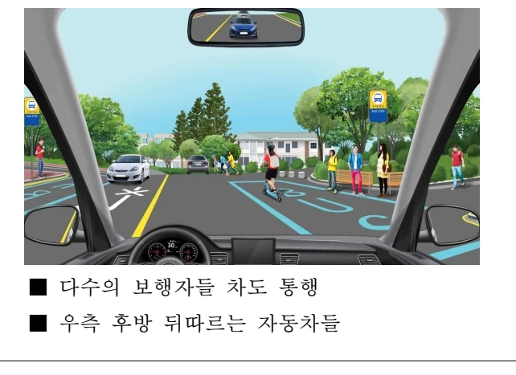

808. Hai tình huống nguy hiểm nào phải chú ý nhất trong tình huống trên đường sau?

- ①Người điều khiển xe kickboard điện có thể đột ngột đi về phía bên trái để tránh người đi bộ phía trước.
- ②Những người đi bộ ở bên phải có thể băng qua đường sang bên trái.
- ③Nếu lái xe chậm thì có thể va chạm với các xe sau.
- ④Có thể va chạm với xe ô tô màu trắng đi ngược chiều.
- ⑤Xekickboard điện có thể va chạm với người đi bộ ở bến xe buýt.
Xem đáp án
Đáp án
① Người điều khiển xe kickboard điện có thể đột ngột đi về phía bên trái để tránh người đi bộ phía trước.
② Những người đi bộ ở bên phải có thể băng qua đường sang bên trái.
Căn cứ
Các tình huống nguy hiểm nhất trong một tình huống nhất định là: Thứ nhất, người điều khiển xe kickboard điện đang đi cùng chiều, ở phía trước và sát bên phải, có thể di chuyển sang bên trái để tránh va chạm với người đi bộ phía trước. Nếu không dự đoán trước hoạt động của kickboard điện và tăng tốc vào khoảng trống phía trước thì rất dễ xảy ra tai nạn giao thông. Thứ hai, người đi bộ ở bên phải có xu hướng dễ dàng băng qua những nơi không có phương tiện băng qua đường. Vì vậy, khi lái xe trên đường phụ sẽ bất lợi nếu đề phòng tai nạn giao thông tăng tốc quá nhanh hoặc dự đoán người tham gia giao thông phía trước hoặc bên phải sẽ luôn cùng chiều chuyển động.
Phần căn cứ là bản dịch máy để tham khảo.